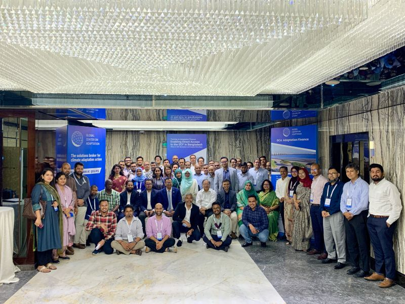
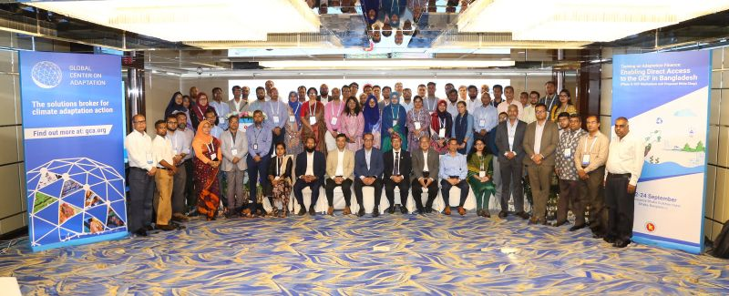

🏢 Organization: Global Center on Adaptation (GCA)
🗓️ Duration: September 2024 – November 2024


The goal of GCA’s training on Adaptation Finance is to develop sustainable capacity of Access Entities, Executing Entities, and Adaptation Experts to better design adaptation concept notes and funding proposals for the GCF. GCF resources are allocated based on the ability of a proposed activity to demonstrate “its potential to adapt to the impacts of climate change in the context of promoting sustainable development and a paradigm shift and the urgent and immediate needs of vulnerable countries.” Project proposals submitted to the GCF must sufficiently demonstrate the need for climate finance and include science-based evidence that the problems to be addressed through the proposed intervention are driven by climate change and climate variability. Project proponents must therefore include a strong climate rationale to explain, as clearly as possible, the climate impacts or risks that the proposed activities address.
The second phase of the training program on adaptation finance is focused on building the participants’ capacity to develop GCF concept notes for the selective projects identified in NAP. In the first phase, the participants gained a basic knowledge of the GCF and funding mechanisms. In the second phase, the participants will obtain a strong understanding and clarity about GCF modalities, approval processes, and funding mechanisms.